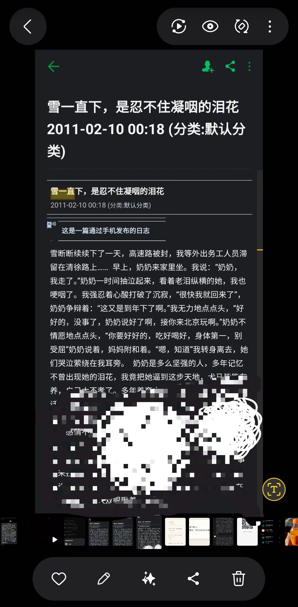
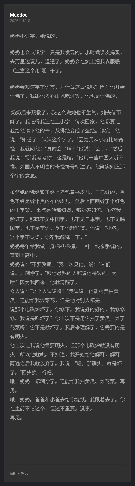

奶奶不识字——这是她说的。
但奶奶也会认识字，只是我发现的。小时候调皮捣蛋，去河里边玩儿，湿透了。奶奶会在炕上把我衣服暖干了。注意这个用词：不是烘干，是暖干。
为什么这么说呢？因为她开始信佛了。我跟她去乔山地吃过饭，那也是信佛的人。
奶奶后来"叛教"了——我这么说她也不生气。她去信耶稣了。我记得我还在上小学，每次回家，她都要让我给她读她的书，从佛经变成了圣经。读完，她说："知道了，认识这个字了。"
我从小就比较奇怪，我问她："真的会了吗？"她说："会了。"我说："那我考考你，这是啥。"她用一些中国人听不懂、外国人不明白的奇怪符号标注了。她确实知道那个字的意思。
我验证过了：那既不是中国字，也不是日本字，也不是韩国字，也不是英语。反正她就知道。 她说："小冬，这个字不认识，你帮我解释一下。" —— 她自己发明了一门只有她能读的语言，并对答如流
她的佛经和圣经都包着书皮，自己缝的。黑色圣经缝个黑布皮儿，上面缝了个红色的十字架。重点是她都知道，都对答如流。
奶奶每年给我做一身棉袄棉裤，一针一线亲手缝的。直到上高中。
奶奶说："不要受屈。"我上次见她，说："人们说，糊涂了。"跟她最熟的人都说她是装的。为啥？因为我回来，她就清醒了。
众人说："这个人认识吗？"我认识。她能给我拍黄瓜，还能给我炒菜花，但是她对别人都是……
她说电磁炉坏了，你修下。我说好的好的，我修修修。我问是咋坏了？你上次不是用它拍了黄瓜、炒了花菜吗？它不是就坏了。
我后来理解了：她需要的是明火。她让我说她需要明火，但那个电磁炉就没有明火，所以她就哄。我开始给她解释，解释两遍之后我放弃了。我说："嗯，那确实，就是坏了。回头换，行吧。"
她认的是火，是人守着的那点热。

雪断断续续下了一天，高速路被封，我等外出务工人员滞留在清徐路上……早上，奶奶来家里坐。我说："奶奶，我走了。"奶奶一时间抽泣起来，看着老泪纵横的她，我也哽咽了。我强忍着心酸打破了沉寂，"很快我就回来了"，奶奶争辩着："这又是到年下了啊。"我无力地点点头，"好好的，没事了，奶奶说好了啊，接你来北京玩啊。"奶奶不情愿地点点头，"你要好好的，吃好喝好，身体第一，别受屈"奶奶说着，妈妈附和着。"嗯，知道"我转身离去，她们哭泣萦绕在我耳旁。

十五年后，同一句话，两篇日记，对上了。
哦，奶奶，都糊涂了。还能给我拍黄瓜、炒花菜。
你在生前不信烧纸这个，但这不重要。没事。
对一个糊涂的人来说，"你"这个字是最后忘的——
也可能是，压根没打算忘的。